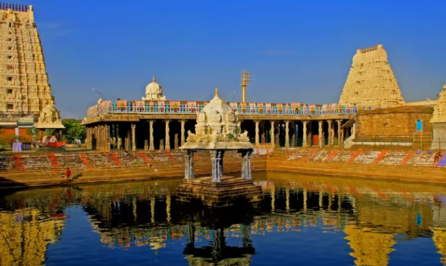

Ekambaranathar Temple
Ekambaranathar temple is so magnificent that it occupies an area of about 23 acres. It is the largest of all temples in Kanchipuram town. It is also referred to by the name ‘Ekambareswarar temple’. Lord Shiva is the main deity of the Ekambaranathar temple representing the ‘Earth’ among the Pancha Bhootas.